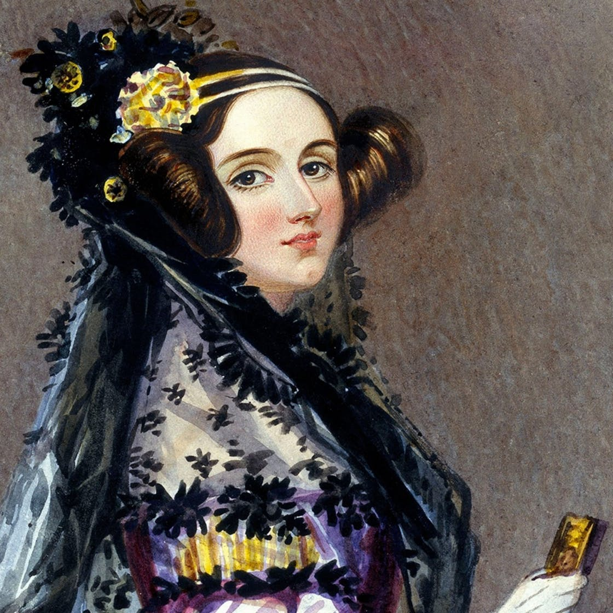
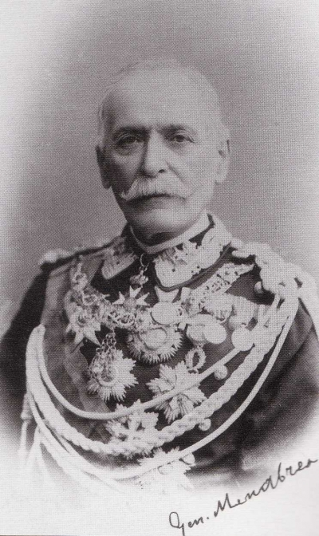
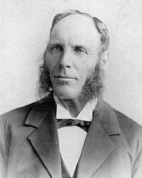
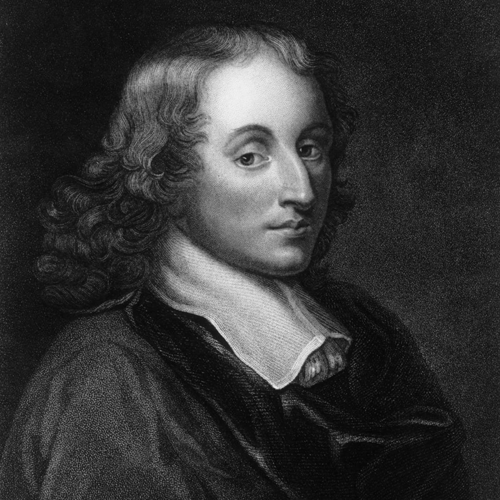

| People | Relationship | Job | Description | Picture |
|---|---|---|---|---|
| Ada Lovelace | Lifelong friend of Babbage and worked on same projects with Babbage | Mathematician and Programmer | She is considered as the first computer programmer. She was mentored by Babbage and assisted Babbage in his projects. She lived between 1815-1852 |  |
| Luigi Federico Menabrea | An Italian politician and mathematician who admired Charles Babbage and joined all his meetings and seminars. | Mathematician and Politician | He is considired as the first computing book writer because of his notes he took from Charles Babbage's seminars and meetings. He lived between 1809-1896 |  |
| Joseph Clement | An Engineer who worked with Babbage for Difference Engine | Engineer and Industrialist | He was working with Chalres Babbage as a paid worker. He helped designing and building the calculating machine "Difference Engine". He lived between 1779-1844 |  |
| Blaise Pascal | A Mathematician who lived long before Babbage but still inspired him. | Mathematician, Physicist and Inventor | He has worked on a machine to do simple calculations like subtraction and addition. Babbage was inspired by his machine. He lived between 1623-1662 |  |
| Gottfired Wilhelm von Leibniz | A Scientist who lived long before Babbage but still inspired him since he improved Pascal's machine. | Scientist, Mathematician and Diplomat | He has improved Pascal's machine to do multiplication and division as well. Babbage was inspired by him too since he improved the machine Pascal did. He lived between 1646-1716 |  |